Marc Lacay, arbitre international
Il participe au stage de Sarrebruck et reçoit le premier Oscar du judo, qui salue son engagement dans l’enseignement et l’arbitrage.
NEUILLY-SUR-MARNE · DEPUIS 1952
Des premiers tatamis rue Perche au Dojo Lionel Grossain, le Cercle Lacay traverse les générations par le judo, le jujitsu et celles et ceux qui les font vivre.
DÉCOUVRIR LE RÉCIT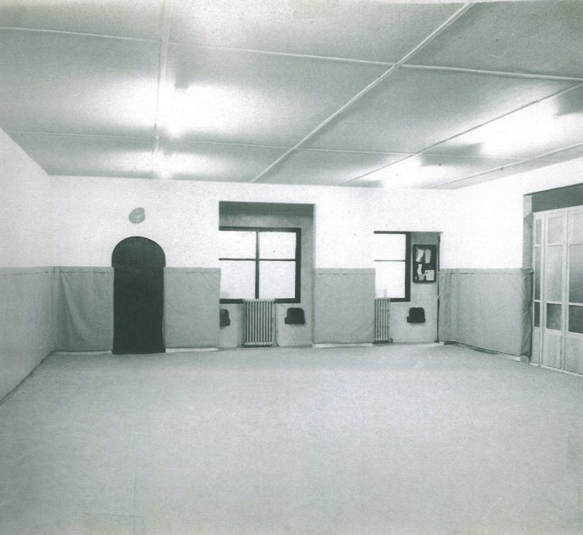
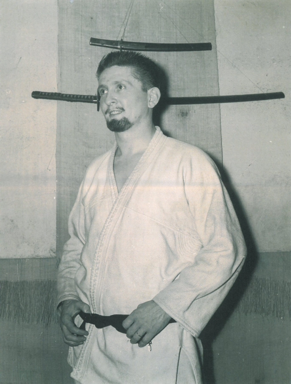
AVANT LE CERCLE, IL Y A MARC
En 1946, Marc Lacay découvre le judo dans un club corporatif de la FSGT. À défaut de judogi, les élèves s’entraînent en bleu de travail, une ficelle à la taille, sur un tapis de lutte ou dans l’herbe.
Il poursuit sa formation auprès de Georges London, puis de maîtres qui façonnent le judo français. Le 23 avril 1950, Mikinosuke Kawaishi lui remet sa ceinture noire. Marc Lacay peut alors ouvrir son propre dojo.
1951 — 1955
Pendant les travaux, les premiers cours ont lieu dans l’arrière-salle du café Quiqui Pierrot. Jacqueline Lacay rejoint un groupe jusque-là exclusivement masculin et s’engage pleinement dans la pratique.
En 1952, le dojo du 3 rue Perche ouvre ses portes. L’association prend le nom de Judo-Club de Neuilly-sur-Marne – Neuilly-Plaisance. Jacqueline et Michel Franceschi obtiennent leur ceinture noire en 1955 ; elle devient l’une des premières femmes françaises à atteindre ce grade.
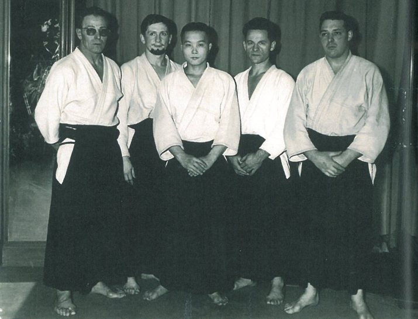
1956 — 1966
Sur les tatamis, les élèves de Marc Lacay se distinguent au plus haut niveau. Le club forme aussi des enseignants, des arbitres et des générations de pratiquants.
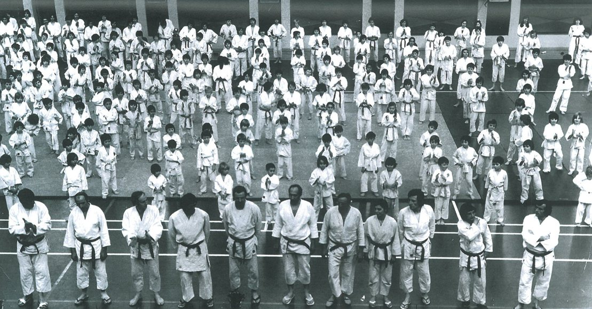
Il participe au stage de Sarrebruck et reçoit le premier Oscar du judo, qui salue son engagement dans l’enseignement et l’arbitrage.
Lionel Grossain devient champion de France et champion d’Europe des 1ers dan à Vienne.
Il devient à son tour champion de France et champion d’Europe des 1ers dan à Amsterdam. Lionel Grossain est vice-champion de France toutes catégories et médaillé d’argent au championnat d’Europe par équipes.
Il remporte le titre national des moins de 80 kg et la médaille d’argent au championnat d’Europe des 2es dan.
Lionel Grossain devient champion de France et champion d’Europe des moins de 80 kg. Il est également vice-champion de France toutes catégories.
Il remporte les championnats de France et d’Europe en catégorie professionnelle, puis représente la France aux Jeux olympiques de Tokyo, où il termine à la cinquième place.
Lionel Grossain est de nouveau champion de France. Son palmarès compte désormais cinq titres de champion de France, trois titres de champion d’Europe et une sélection olympique.
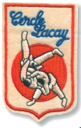
UN NOM, UN EMBLÈME
Le club adopte officiellement le nom de son fondateur en 1961. Le premier logo du Cercle raconte déjà l’attachement du club aux arts martiaux.
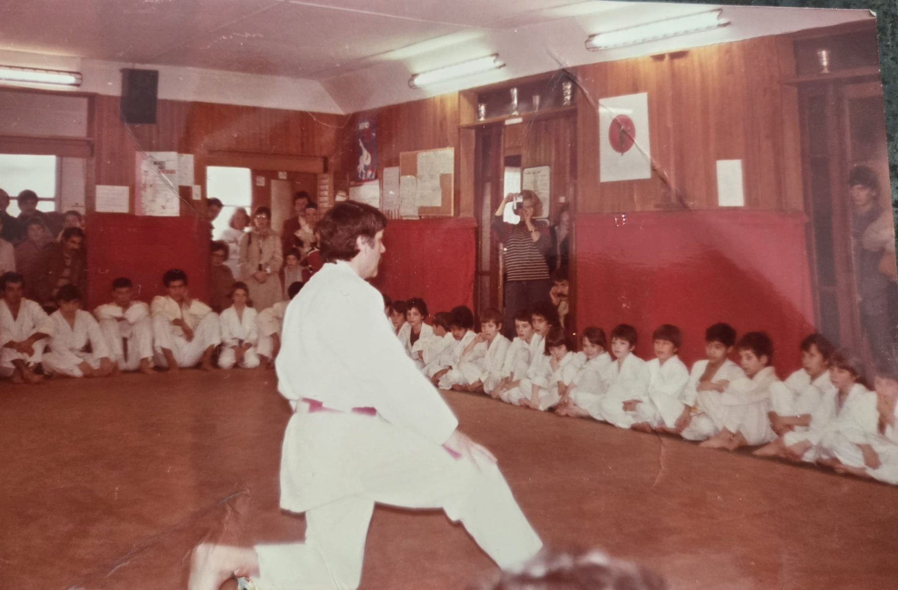
1966 — 2011
Jacqueline Lacay cesse d’enseigner en 1966, mais reste secrétaire du club. Marc développe les cours de jujitsu et de remise en forme. Les galas annuels font découvrir les arts martiaux à tout Neuilly-sur-Marne.
En 1980, Marc quitte le dojo qu’il a fondé. Ses anciens élèves poursuivent son travail. En 1994, il reçoit son 7e dan des mains de Lionel Grossain et Michel Franceschi. Il s’éteint en 2011, laissant une empreinte durable dans le judo français.
Son œuvre perdure à travers les enseignants qu’il a formés et les judokas qui perpétuent son enseignement.
2013 — 2021
Le Cercle traverse plusieurs années difficiles. En 2014, il devient locataire de son dojo historique. La pandémie interrompt les cours, puis le décès de Patrick Elbory en 2021 fragilise profondément l’association.
Autour de François Cape, une nouvelle équipe se mobilise pour reconstruire le club, relancer les cours et préparer un nouveau chapitre.
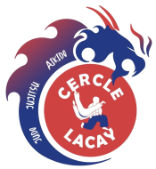
UN NOUVEL ÉLAN · 2021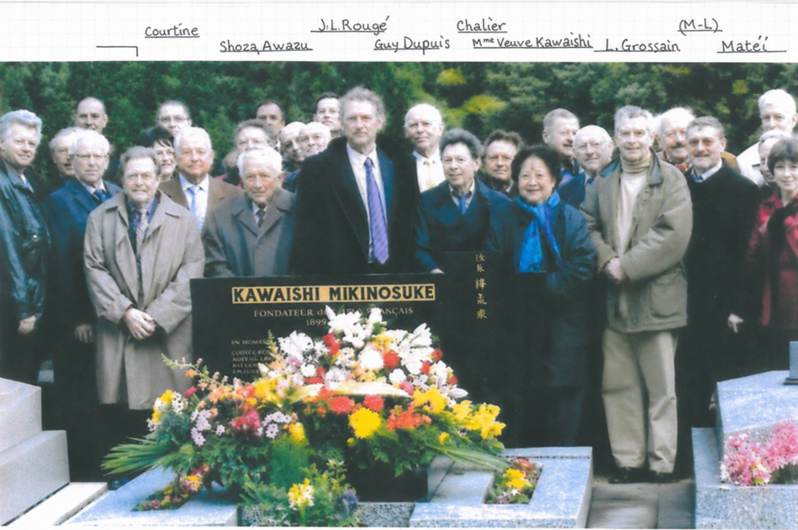
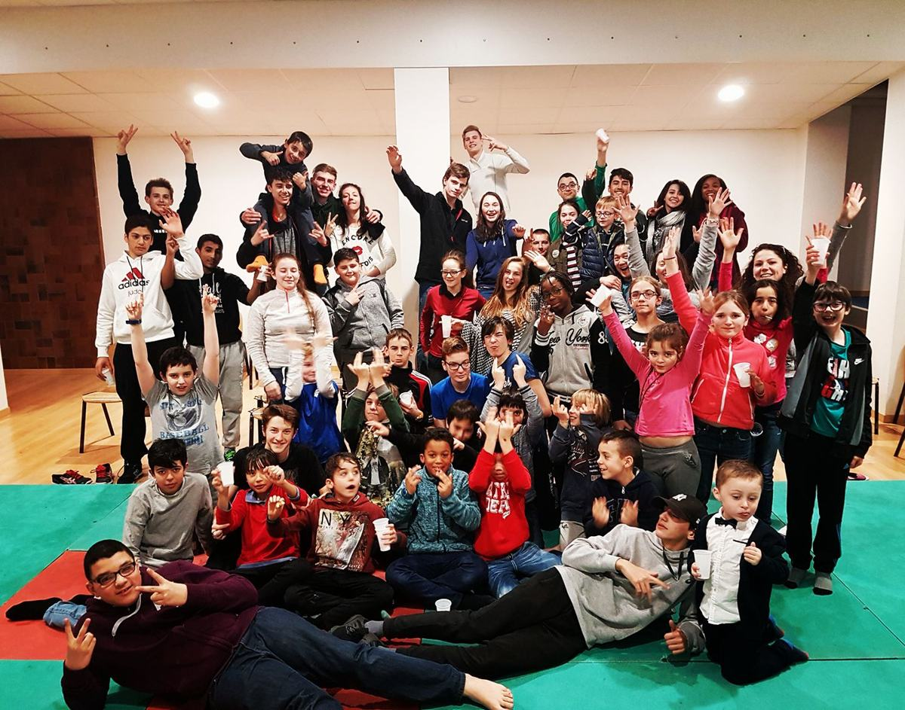
2017 · UN STAGE PARTAGÉ
Cette année-là, Dominique Guendil est élu président. Le Cercle Lacay participe au stage judo-ski organisé par Jean-Pierre Porte, avec les élèves de l’école d’arbitrage et des jeunes venus de plusieurs clubs de Seine-Saint-Denis.
La légende d’archive indique que plusieurs jeunes présents deviendront ensuite professeurs et arbitres en Seine-Saint-Denis. Le stage rassemble les pratiquants de plusieurs clubs et les élèves de l’école d’arbitrage autour d’un même rendez-vous.
2022 — 2023
Après soixante-dix ans rue Perche, le club quitte ses locaux historiques. En juin 2022, une fête rassemble anciens et nouveaux adhérents, familles et sections autour de cette page qui se tourne.
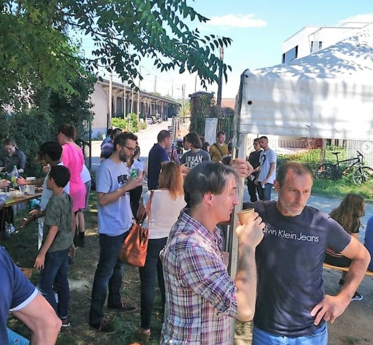
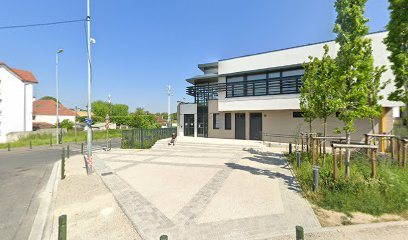
Le nouveau gymnase est inauguré sous le nom de Dojo Lionel Grossain, en présence de Lionel Grossain. Les cours reprennent et les effectifs remontent. En fin de saison, le club reçoit le label Club Bronze.
2023 — 2026
De nouveaux tatamis, des distinctions pour les bénévoles et les enseignants, de nouveaux résultats sportifs : le Cercle Lacay construit la suite sans perdre le fil de son histoire.
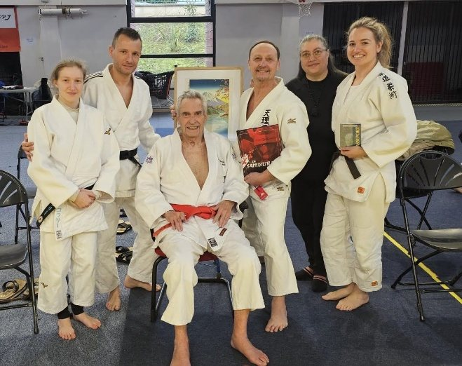
En 2025-2026, Thierry Rodrigues réussit l’examen du 7e dan de jujitsu, rejoignant ainsi le grade de Marc Lacay. Il reçoit également la médaille d’or Jeunesse et Sports et la médaille d’or de la ville de Neuilly-sur-Marne.
Coralie Euthine décroche le bronze au championnat de France de jujitsu ne-waza. La ville de Neuilly-sur-Marne lui remet également la médaille d’argent de la sportive de l’année.